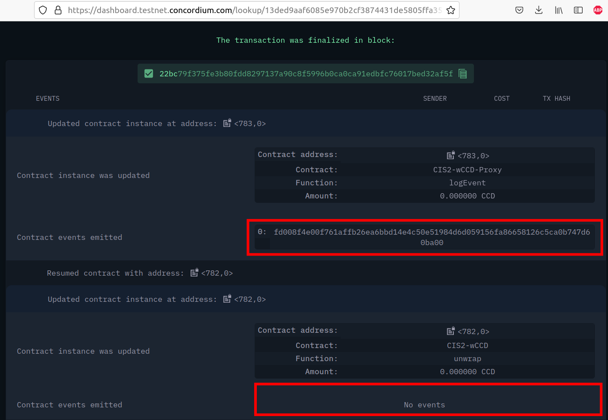
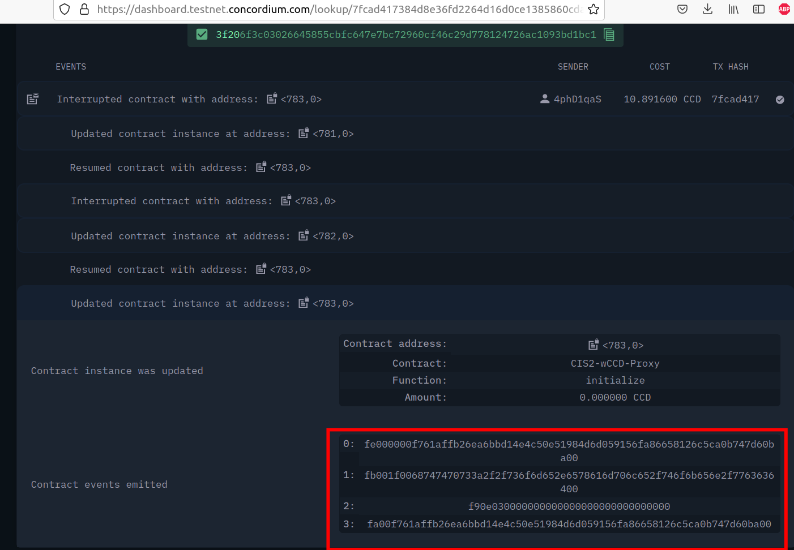
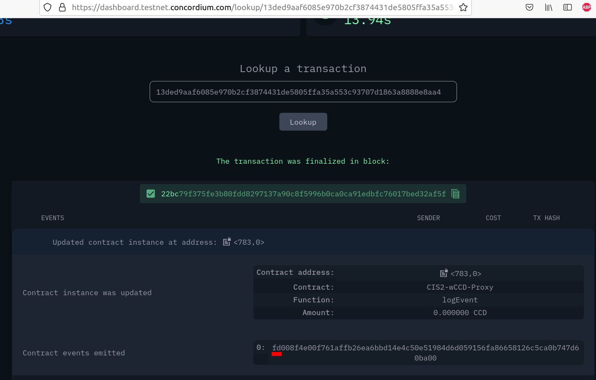
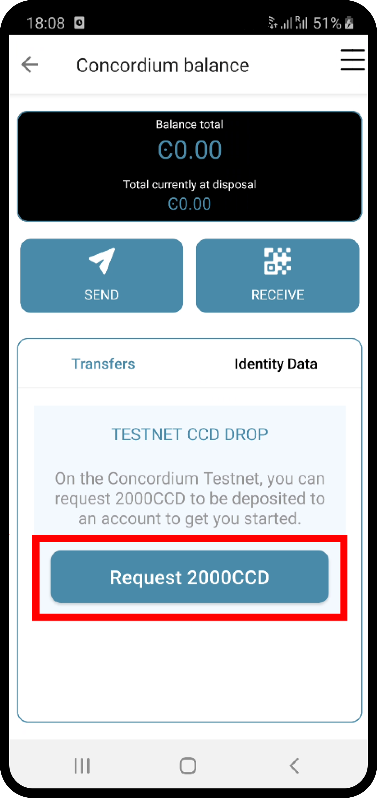
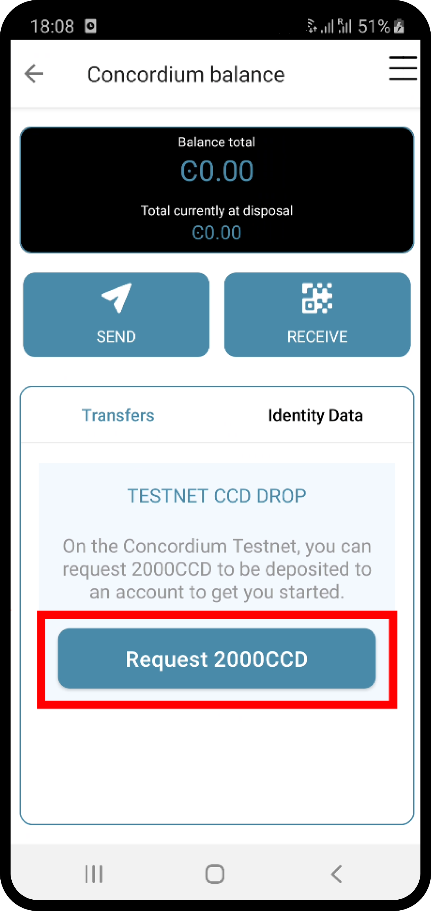

FAQ for Ethereum developers#
The following Frequently Asked Questions about Concordium focuses on helping developers with an Ethereum/solidity background to understand the Concordium blockchain and its smart contract ecosystem.
Feel free to participate and add your questions to the Concordium software support channels.
Concordium smart contracts#
What smart contract language is used on Concordium?
Smart contracts are deployed as wasm modules on the Concordium chain. Rust currently has the best support to write and compile your smart contract into a wasm module that then can be deployed to the Concordium chain.
How can I start with the Rust smart contract language?
Rust is a fast and memory-efficient language that is a popular smart contract language among different blockchain projects. There is plenty of literature to get started with Rust such as the Rust language book. You can find examples of smart contracts in the Concordium Rust smart contract repo.
Where can I find example smart contracts?
You can find examples of smart contracts in the Concordium Rust smart contract repo.
Where can I find a smart contract reference library similar to the GitHub repo from OpenZeppelin?
You can find examples and standard implementations in the Concordium Rust smart contract repo.
Note
These contracts are not meant for production. They are used to illustrate how to use the standard library and the tooling Concordium provides. There is no claim that the logic of the contract is reasonable or safe.
Should I use V0 or V1 smart contracts?
Version 1 smart contracts have many improvements and features added compared to Version 0 smart contracts. Hence, V1 smart contracts are recommended over V0 smart contracts if you start a new project. Mainnet continues supporting V0 smart contracts due to backward compatibility.
How can I write a smart contract?
You can follow the chapter writing a smart contract in the piggy bank tutorial.
How can I test a smart contract?
You can follow the chapter testing a smart contract in the piggy bank tutorial.
Can I build tests that print a table of content structure (a layered output similar to mocha and chai tests)?
Yes. You can use a similar pattern as shown below:
#[cfg(test)]
mod tests {
mod func_a {
#[test]
fn correct_params_correct_result(){...}
#[test]
fn invalid_params_invalid_result(){...}
}
}
The test cases are printed as follows:
running 2 tests
test tests::func_a::correct_params_correct_result ... ok
test tests::func_a::invalid_params_invalid_result ... ok
How are smart contract addresses represented on Concordium?
In terms of naming, Concordium uses contract and account to refer to the Ethereum equivalent of a smart contract and an externally owned address, respectively. The word address refers to either an account address or a contract address on Concordium.
Contract addresses on Concordium are represented by an index and a subindex as seen below. When invoking the init function, a new smart contract instance is deployed and assigned the next index number in sequential order. The subindex is currently not in use and is always 0. There are plans to give the subindex meaning in the future.
In contrast to Ethereum, you cannot send CCD to a contract address (or account address) before they have been deployed/initialized on the Concordium chain.
ContractAddress {
index: 1234,
subindex: 0,
};
How are externally owned addresses represented on Concordium?
In terms of naming, Concordium uses contract and account to refer to the Ethereum equivalent of a smart contract and an externally owned address, respectively. The word address refers to either an account address or a contract address on Concordium.
Accounts on the chain are identified via an account address, which is a 32-byte sequence. The address is usually displayed in Base58Check encoding with version byte 1. An example of such an address is 3ZFGxLtnUUSJGW2WqjMh1DDjxyq5rnytCwkSqxFTpsWSFdQnNn.
In contrast to Ethereum, accounts are also deployed on-chain and their corresponding account address only exists from that point on. You cannot send CCD to an account address (or a smart contract address) before they have been deployed/initialized on the Concordium chain. When a smart contract tries to interact with an address that has not been deployed/initialized yet, the interaction fails.
Can I distinguish between contract and account addresses?
Yes. You can distinguish between the different types of addresses in smart contracts on the Concordium chain. Addresses are represented as an enum with two variants.
pub enum Address {
Account(AccountAddress),
Contract(ContractAddress),
}
Rust has a pattern matching that determines at runtime which variant of the enum Address is applicable, and then the appropriate code is executed. You can read more about pattern matching in the Rust language book.
For example, the below code prints out a different message depending on if the sender that invoked this smart contract function is a contract or an account.
match ctx.sender() {
Address::Contract(contract_address) => { println!("This contract invoked the function: {:?}", contract_address) },
Address::Account(account_address) => { println!("This account invoked the function: {:?}", account_address) },
};
Add the above pattern matching snippet to one of your Rust smart contract functions and write a test case that invokes that function. You can see the printout of the snippet by running the tests with the below command.
$cargo test -- --nocapture
What is the equivalent to msg.sender and tx.origin on Concordium?
ctx.sender(), and ctx.invoker() are the equivalent variables to msg.sender, and tx.origin on the Concordium chain, respectively.
The ctx.invoker() variable refers to the original account address (no contract address)
that started the transaction while ctx.sender()
refers to the immediate address (it could be an account
or another contract address) that invokes the function entry point.
A contract cannot start a transaction and that is why ctx.invoker() never returns a contract address.
How do I get the balance of the smart contract within the Rust code?
host.self_balance() returns the current balance of the smart contract.
Upon entry to a smart contract function, the balance that is returned is the sum of the
balance of the contract at the time of the invocation and the amount that is being transferred to the contract.
Additional documentation can be found in the self_balance description
of the concordium-std crate.
How do I get the address of the smart contract within the Rust code?
ctx.self_address() returns the address of the smart contract.
Additional documentation can be found in the self_address description of the concordium standard crate.
Can I force CCD to a smart contract even if it has no payable function?
There are three edge cases on the Ethereum chain that forces ETHER to a contract address even though there is no payable function on it.
using the self-destruct opt-code.
inserting a smart contract address as the miner address in a minted block.
pre-calculating the contract address and sending ETHER before the contract is deployed.
In contrast, CCD can only get onto a smart contract if it has at least one payable entry point.
no self-destruct host function.
a smart contract cannot be a validator(miner) of a minted block.
CCD cannot be transferred to a smart contract address before a smart contract is initialized at that index.
Can I print values from the smart contract code or test cases?
Yes. You can use
println!("Printing output of f: {}, and g: {}", f(1,2,3), g("hi"));
or
println!("Printing debug value: {:?}", 12345);
for printing to stdout and
eprintln!("Printing output of f: {}, and g: {}", f(1,2,3), g("hi"));
or
eprintln!("Printing debug value: {:?}", 12345);
for printing to stderr.
Add one of the above lines of code to a Rust smart contract function or one of your test cases (Write a test case that invokes your Rust smart contract function if the printing statement is in the smart contract code). You can see the printout by running the tests with the below command.
$cargo test -- --nocapture
My transaction is rejected and I get an error code number. How can I interpret smart contract errors?
Error codes come from the concordium-std crate or are thrown by the smart contract itself.
Concordium-std crate errors
An example of a concordium-std crate error is shown below:
Error: Updating contract instance failed:
'smash' in 'PiggyBank' at {"index":12345,"subindex":0} failed with code -2147483636.

You can find the meaning of common error codes in this list.
This error was thrown by the concordium-std crate. The error codes start from i32::MIN and go upwards.
-2147483636 corresponds to NotPayableError. In contrast, error types of smart contracts start from -1 and go downwards.
Smart contract errors
An example of a smart contract error is shown below:
Error: Updating contract instance failed:
'smash' in 'PiggyBank' at {"index":12345,"subindex":0} failed with code -1.

You can find the meaning of the piggy bank error codes in this section.
This error was thrown by the smart contract. The error codes start from -1 and go downwards.
-1 is the first error code and corresponds to NotOwner.
In contrast, errors from the concordium-std crate start from i32::MIN and go upwards.
Is there a smart contract code linter?
Yes. You can use the fmt and the cargo clippy linter tools as described in the README.
Are tests executed in parallel or sequentially?
Tests run in parallel by default with the following two commands
$cargo concordium test
$cargo test
You can use the below command for consecutive execution of the tests.
$cargo test -- --test-threads=1
How do I embed a schema into a smart contract? Why do I need a schema? How can I provide the input parameters as a JSON object and get the output parameters in a human-readable format when using the concordium-client?
A smart contract schema is a description of how to represent
bytes in a more structured representation. It is used by
external tools (such as the concordium-client) when displaying the return value of a receive
function and for specifying the input parameters to a receive
function using a structured representation, such as JSON.
The smart contract function needs to define a parameter and a return_value
so that a schema can be generated for the input parameters and the output parameters, respectively.
#[receive(
contract = "CIS2-wCCD",
name = "balanceOf",
parameter = "ContractBalanceOfQueryParams",
return_value = "ContractBalanceOfQueryResponse"
)]
fn contract_balance_of(
ctx: &ReceiveContext,
host: &Host<StateImplementation>,
) -> ContractResult<ContractBalanceOfQueryResponse> { ... }
The schema can either be embedded into the smart contract or generated as a separate file.
Option 1 (Schema embedded into a smart contract)
$cargo concordium build --schema-embed
The shorter version of the above command is as follows:
$cargo concordium build -e
Option 2 (Schema as a separate file)
$cargo concordium build --schema-out ./schema.bin
The shorter version of the above command is as follows:
$cargo concordium build -s ./schema.bin

If the schema is a separate file, it needs to be provided with the --schema flag to the concordium-client.
When using the concordium-client to interact with smart contracts the input and output parameters
can be either in human-readable format (with a schema) or in raw bytes (binary format).
Example 1 (Schema is provided as a separate file but the provided file with the flag `parameter-json` has a wrong JSON object)
If your JSON object that was provided with the --parameter-json flag is in the wrong format, you
get an error message with additional information on what JSON object format is expected.
This information can help you to create the correct JSON object.

Example 2 (Schema is embedded into the smart contract and the `parameter-json` flag provides the input parameters as a JSON object; the return value is displayed in a human-readable format due to the provided additional information in the schema)

Example 3 (Schema is provided as a separate file and the `parameter-json` flag provides the input parameters as a JSON object; the return value is displayed in a human-readable format due to the provided additional information in the schema)

Example 4 (No schema is provided and the `parameter-binary` flag provides the input parameters as a raw bytes string; the return value is displayed in raw bytes because no additional information is available on how to represent the bytes in a human-readable format)

How can I create the parameter data if I want to use binary input instead of a JSON input?
When using the concordium-client to interact with smart contracts the input and output parameters
can be either in human-readable format (with a schema) or in raw bytes (binary format).
If you want to use the binary format, the below command shows that a myInputParameters.bin file is required.
$concordium-client contract update <ContractIndex> --entrypoint <ContractEntryPoint> --parameter-binary myInputParameters.bin --sender <Account> --energy 12345678
You can create such a myInputParameters.bin file by adding the below lines to your test cases replacing the ExampleParams struct with your input parameter struct for that function.
let parameter = ExampleParams {
example_key1: value1,
example_key1: value2,
}
let parameter_bytes = to_bytes(¶meter);
std::fs::write("myInputParameters.bin", ¶meter_bytes).expect("Failed to write parameter file");
When running the tests with the below command the myInputParameters.bin file is created in the current folder.
$cargo test
Events#
Where can I find a logged event on testnet/mainnet?
You can look up a transaction hash on the dashboard such as this example. It will provide you with the full execution chain of the smart contracts that were invoked and updated during this tx. You can click on an updated contract instance row to see additional information. For example, navigate to the last page (third page) of the displayed execution chain of this transaction and click on the top row Updated contract instance at address: <783,0>. You will see additional information about the smart contract address, name, the function entry point that was invoked, the CCD amount that was sent to the function, and events that were logged by this smart contract function.
The below picture shows that one event was logged by the contract <783,0> and no event was logged by the contract <782,0>.
If several events are logged by one function entry point, the different events can be distinguished by their array index. The below picture shows that four events were logged by an entry point in this execution chain.

How can I compare/decode the event data that I see on the dashboard?
A smart contract developer is free to use their own way of encoding and interpreting event log data when writing their own smart contracts.
The official Concordium smart contracts use the following standard: Each event has a number tag and then the rest of the event data.
For example, the above image has an event number tag of fd (hex encoding) which is 15*16+13 = 253 in decimal.
This number tag corresponds to a burn event
of a Cis2 token.
u8::MAX is 255 in decimal and u8::MAX-2 is 253 in decimal (the same value as in the image above).
pub const BURN_EVENT_TAG: u8 = u8::MAX - 2;
This number tag is used to distinguish between the different types of events.
In contrast, Ethereum uses a 32-byte long hash as an event tag which is called the event signature.
eventTag (Ethereum) = hash(Transfer(address, address, uint)).
A downside of using a hash is that you have to use more than one byte for the tag to avoid getting collisions. Concordium can efficiently store the event tag in 1 byte compared to the 32 bytes used by Ethereum.
Option 1: You can compare the rest of the event data by adding the below lines of code to your test cases and adjusting the MyEventParams to the event object that you are using.
let parameter = MyEventParams {
example_key1: value1,
example_key1: value2,
}
let parameter_bytes = to_bytes(¶meter);
println!("{:02x?}", parameter_bytes);
When running the test cases with the below command, the event data is printed to your standard output.
$cargo test -- --nocapture
For example, the following output would be shown on the dashboard as 0: fe0003532a04.
[fe, 00, 03, 53, 2a, 04]
Option 2:
You can compare the rest of the event data by adding the below line to your Cargo.toml file
[dependencies]
hex = "0.4"
as well as adding the below lines of code to your test cases and adjusting the MyEventParams to the event object that you are using.
let parameter = MyEventParams {
example_key1: value1,
example_key1: value2,
}
let parameter_bytes = to_bytes(¶meter);
println!("{}", hex::encode(¶meter_bytes));
When running the test cases with the below command, the event data is printed to your standard output.
$cargo test -- --nocapture
For example, the following output would be shown:
fe0003532a04
How does the Chain record CCD transfer events in the test cases?
Every time when a transfer occurs by the below code, the Chain records the address and the amount.
host.invoke_transfer(address, amount);
The recorded event data can be used in the test cases to confirm that the CCD was transferred as shown in the below example code.
assert_eq!(update_transfer.account_transfers().collect::<Vec<_>>()[..], [
(contract_address, Amount::zero(), ACC_0),
(contract_address, Amount::zero(), ACC_1)
]);
Standards#
Is there something similar to the ERC20 standard?
Yes, please read the CIS-2 standard. The CIS-2 standard can represent fungible and non-fungible tokens. It combines the Ethereum ERC20 and ERC721 standards with some modifications. Please explore the corresponding CIS-2 library. The CIS-2 library is meant to be imported by CIS-2 tokens. Please explore the CIS-2 token standard implementations that import the CIS-2 library:
Is there something similar to the ERC721 standard?
Yes, please read the CIS-2 standard. The CIS-2 standard can represent fungible and non-fungible tokens. It combines the Ethereum ERC721 and ERC20 standards with some modifications. Please explore the corresponding CIS-2 library. The CIS-2 library is meant to be imported by CIS-2 tokens. Please explore the CIS-2 token standard implementations that import the CIS-2 library:
Is there something similar to the ERC165 standard?
Yes, please read the CIS-0 standard. Please explore the CIS-2 library that provides the basic CIS-0 primitives. The CIS-2 library is meant to be imported by CIS-2 tokens so they can implement the CIS-0 standard easily. Please explore the token examples that have the CIS-0 standard implemented:
Is there something similar to a wrapped token contract?
Yes, please explore:
the wCCD tutorial
the wCCD example source code.
Concordium provides and maintains the canonical wCCD implementation. Developers are encouraged to use the following addresses for their dApps.
Testnet canonical wCCD address: <2059,0>
Mainnet canonical wCCD address: <9354,0>
Does Concordium have upgradable smart contracts?
Yes, you can choose to make your smart contracts upgradable. See Upgradeability for more details.
Does Concordium have something similar to delegateCall?
No. A contract on Concordium can only change its own state. If you are looking for an upgradable pattern, please explore the upgradable wCCD implementation.
Deploying and initializing smart contracts#
How can I deploy a smart contract to the Concordium chain?
You can follow the chapter deploying a smart contract in the piggy bank tutorial.
Is there a smart contract size limit when deploying a contract on-chain?
Yes. The module (.wasm file) size limit is 64kB for V0 contracts and 512kB for V1 contracts. Concordium chose a much higher limit compared to the Ethereum chain. Smart contract developers can deploy large-scale protocols on Concordium without splitting them into small smart contract pieces which is a common annoyance encountered on Ethereum.
What is the owner of a smart contract instance on Concordium?
You can access the account that created a smart contract instance with the variable ctx.owner().
It is always an account because smart contracts cannot initialize another smart contract on Concordium.
ctx.owner() is the account that invoked the init function to create a smart contract instance.
Can a smart contract deploy/initialize another smart contract on Concordium?
No. The init function has to be called by an account (not a smart contract) on the Concordium chain.
Can I create a factory smart contract on Concordium?
In short: no. A factory smart contract on the Ethereum chain deploys other smart contracts. In contrast,
the init function has to be called by an account (not a smart contract) on the Concordium chain.
The guide to using the factory pattern on Concordium discusses
the alternatives and how to emulate the factory pattern.
Can I predict/calculate the address of the smart contract before deploying it? Is there something similar to the Ethereum CREATE2?
No. Contract addresses on Concordium are represented by an index and a subindex as seen below.
When invoking the init function, a new smart contract instance is
deployed and assigned the next index number in sequential order.
The subindex is currently not in use and is always 0. There are plans to give the subindex meaning in the future.
In contrast to Ethereum, you cannot send CCD to a contract address (or account address) before they have been deployed/initialized.
ContractAddress {
index: 1234,
subindex: 0,
};
Can I invoke another smart contract from within the init function?
No. The init function is similar to a constructor function. Its purpose
is to deploy a new smart contract instance from a module and set the state of the current smart contract.
You have to use a regular receive function when you want to invoke another smart contract.
Concordium tools#
Does Concordium have a block explorer?
Yes. The official block explorer is CCDScan. In addition, you can use the dashboard to look up txs, explore the network, and observe the block-producing process.
Can I upload and verify my smart contract code on the block explorer (CCDScan)?
CCDScan currently does not support compiling, hosting, or verifying your smart contract code. You are welcome to publish your smart contract code in public source code management tools such as GitHub.
Miscellaneous#
What is the native currency on Concordium?
The native currency of the Concordium chain is CCD.
Where do I get some test CCD? Is there a testnet faucet?
There are several options to request test CCD:
Option 1: If you just created your account in the mobile app wallet, you find a button to request 2000 testnet CCD to get started with your new account.
 

Option 2: If you have the curl package installed on your Unix-like operating systems, you can request CCD in the terminal directly from the wallet proxy via the below command.
$curl -X PUT https://wallet-proxy.testnet.concordium.com/v0/testnetGTUDrop/<YourAccountAddress>
If you insert your account address correctly, the command should look similar to the below line.
$curl -X PUT https://wallet-proxy.testnet.concordium.com/v0/testnetGTUDrop/4phD1qaS3U1nLrzJcgYyiPq1k8aV1wAjTjYVPE3JXBDAz9WdEy
The above request will return a transaction hash which you can look up on the block explorer. You can only request CCD a single time for each account address via this API endpoint. If you already submitted a request before, it will be an old transaction hash that is returned.

Option 3: Alternatively, you can use Postman and insert the following data before clicking the Send button.

Option 4:
If you have the curl package and the concordium-client tool installed on your Unix-like operating systems, you can request CCD to any of your alias account addresses.
If you already sent a previous request to the wallet proxy, you can not request any more CCD to the same account address.
Look up one of your alias account addresses instead and use it for your request.
The CCD will be credited to your canonical account address.
$concordium-client account show-alias <YourAccountAddress> --alias <number>
If you insert your account address and a number correctly, the command should look similar to the below line.
$concordium-client account show-alias 4phD1qaS3U1nLrzJcgYyiPq1k8aV1wAjTjYVPE3JaqovViXS4j --alias 17
This generates the output:
The requested alias for address 4phD1qaS3U1nLrzJcgYyiPq1k8aV1wAjTjYVPE3JaqovViXS4j is 4phD1qaS3U1nLrzJcgYyiPq1k8aV1wAjTjYVPE3JXBDCpCaUT6
Copy your alias address to the below command.
$curl -X PUT https://wallet-proxy.testnet.concordium.com/v0/testnetGTUDrop/<YourAliasAccountAddress>
If you insert your alias account address correctly, the command should look similar to the below line.
$curl -X PUT https://wallet-proxy.testnet.concordium.com/v0/testnetGTUDrop/4phD1qaS3U1nLrzJcgYyiPq1k8aV1wAjTjYVPE3JXBDCpCaUT6
Option 5: If you need plenty of CCD for large-scale testing, please contact Concordium’s technical support via support@concordium.software.
Is there something similiar to gas and transaction fees?
Yes, gas is called NRG (pronounced energy) on the Concordium chain. The block limit is 3 million NRG. Transaction fees are fixed in Euro and are much cheaper than on Ethereum.
What networks can be used for testing?
Concordium has a testnet, a stagenet, and a protonet for testing. The testnet is available publicly. Please contact us via Concordium’s technical support support@concordium.software if you have a special request for accessing other networks.
Does Concordium have multiSig wallets?
Yes. You can create a multiSig wallet with the desktop wallet. Each account has 1+ credentials, and each credential has 1+ keys. You can set a threshold for the number of signers needed on an account (for example 2/3 signers).
Note
The desktop wallet supports all transaction types (except smart contract transactions).
In contrast, on Ethereum, an externally owned account cannot hold more than one key, and no externally owned account multiSig wallet exists. All multiSig wallets on Ethereum are smart contracts.
Note
You cannot import the keys from the desktop wallet to the concordium-client.
Hence, the desktop wallet does not support smart contract transactions.
If you need the multiSig wallet to manage a smart contract,
you need to deploy a smart contract multiSig wallet
(similar to how Ethereum uses multiSig wallets at work).
What does invoke mean?
It can mean to execute or initiate a function. It is equivalent to Ethereum saying: “Calling a smart contract function”.
In the context of the
concordium-clienttool, it means to simulate a transaction locally on your node via the invoke command of theconcordium-clienttool instead of sending the transaction to the blockchain network and executing it on-chain. Since the transaction was simulated it was not inserted by the bakers in a block and is not part of the blockchain and state changes that the invoke command makes are discarded afterwards.

{kind=link}
{kind=link}
{kind=link}
{kind=link}
{kind=link}